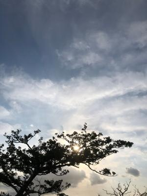
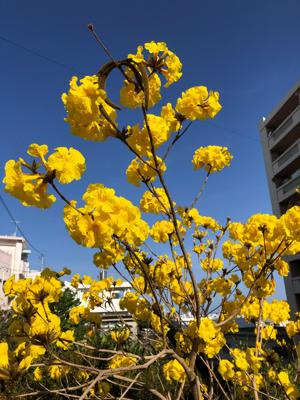

うるがいの話 ある日
最新: 誤送付【うるがいの話 ある日】とは 一日だけのプログです
『うるがいの話』の最新一日だけのプログで、通信料が少なく経済的だ。カニの画像をクリックすると全ての日付が載る『うるがいの話』サイトを表示します
|
|
【うるがいの話】 うるがい(ｳﾙｶﾞｲ urugai)とは、『もずくがに』の名前でとても大きくなります。 |
|---|---|
|
|
【カミマヤーの話】 猫のことを方言でマヤーといいます。カミマヤー（kamimayaa）とは、神の猫のことです。 |
|
【たながぁの音楽】 たながぁ（ﾀﾅｶﾞｰtanagaa）とは手長えびのことで、何種類かあり大きいのは車 エビぐらいになります。 |

|
【ぶながぁの話】 ぶながー(bunagaa)とは、赤い髪の毛、赤い身体、そして身長は１ｍ２０ｃｍ ぐらい、川の蟹を食べているの目撃された。場所は沖縄県国頭郡大宜味村のと ある村僕の隣近所に住んでいる爺さんから、聞いた話です。 |
|
|
【ギーマの話】 ギーマ(giima)とは、山原の里山に咲くスズランに似た、 花を付けます。実は食べられます、 気が付くと口の周りが紫になっています。 |
2022年03月16日 (水）誤送付
16:12

病院へ行くため、トヨタから借りているアクアの車に乗り込んだところ、見慣
れないマークが点灯している。あれ、故障かな？、以前にもあった。徳島でレ
ンターを借りた時も、走行中にこのような警告がついた。車に備え付きの取説
を読むとトヨタの会社へ直ちに連絡してくださいとあった。おどろき、お店に
電話すると、センサーの故障かもしれないが特に心配しなくていいですよと言
われたので、そのまま運転を継続した。ヨメ曰く、その時と同じで誤って何処
かスイッチを押したのでは？調べたらとシツコク言われたが、センサーがおか
しくなっているのだろうと無視して、病院へ運転を継続した。ヨメが病院へ入
っている間、取説を読んだ。ん！、車線または走路からの逸脱の可能性を警告
するＬＤＡというスイッチが押されていたことが、原因と分かった。病院から
戻ったヨメにそのことを話すと、毎度の事だけど『人が言ったことを聞かない
ヨネ！』と突っ込まれた。会社でも、よく同僚から言われたことがある。確か
に、悪いクセである、大いに反省する。それと、近頃はミスが続いている、昨
日は誤ってＳＭＳをしたし、動物係２班の役割のためヨメのお母さんちのいっ
たところ、アパートの鍵を持ってくるのを忘れていることに気づく（４回ほど
）、原因はいろいろな事をしようと落着きがなくなっているのではと言われた
。恐らく、２度課題を提出し落第した、動画研修のプレシャのせいかもと、も
ともと課題提出の納期がないので中断することにした。

１５時４６分 ビットコインの総資産 ￥１３、５０１↑